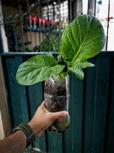

What is urban gardening?
Urban gardening is the practice of growing plants in urban areas. It can be done in a variety of spaces, such as on balconies, rooftops, and in community gardens.
Benefits of urban gardening
Urban gardening has many benefits, both for individuals and for the community as a whole.
-

- Individuals
- Improved health and well-being
- Reduced stress and anxiety
- Sense of accomplishment
- Community
- Increased access to fresh produce
- Improved green space
- Reduced crime
- Increased social cohesion
How to start an urban garden
If you're interested in starting an urban garden, here are a few tips:
- Choose a location that gets at least 6 hours of sunlight per day.
- Select plants that are suited to your climate and growing conditions.
- Prepare the soil by adding compost or other organic matter.
- Plant your plants according to the instructions on the seed packet or plant label.
- Water your plants regularly, especially during hot weather.
- Fertilize your plants every few weeks with a balanced fertilizer.
- Weed your garden regularly to keep weeds under control.
- Harvest your crops when they are ripe.
Conclusion
Urban gardening is a great way to improve your health, the environment, and your community. If you have the opportunity, I encourage you to start an urban garden of your own.